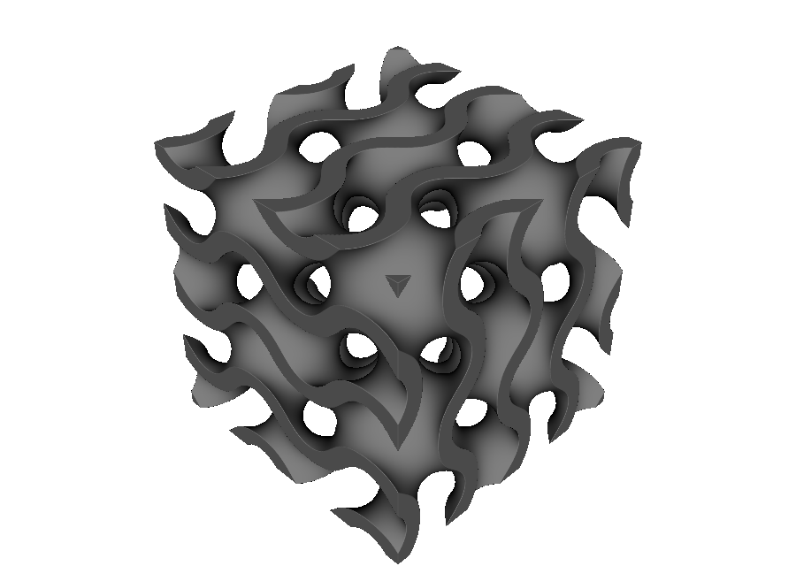
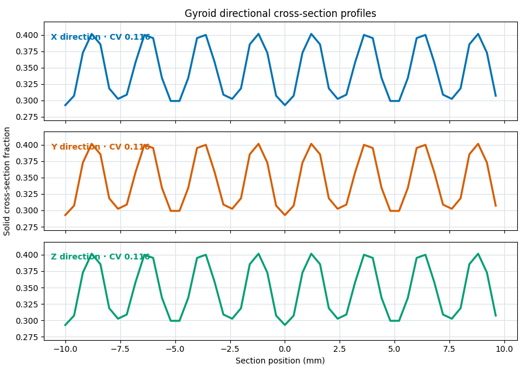
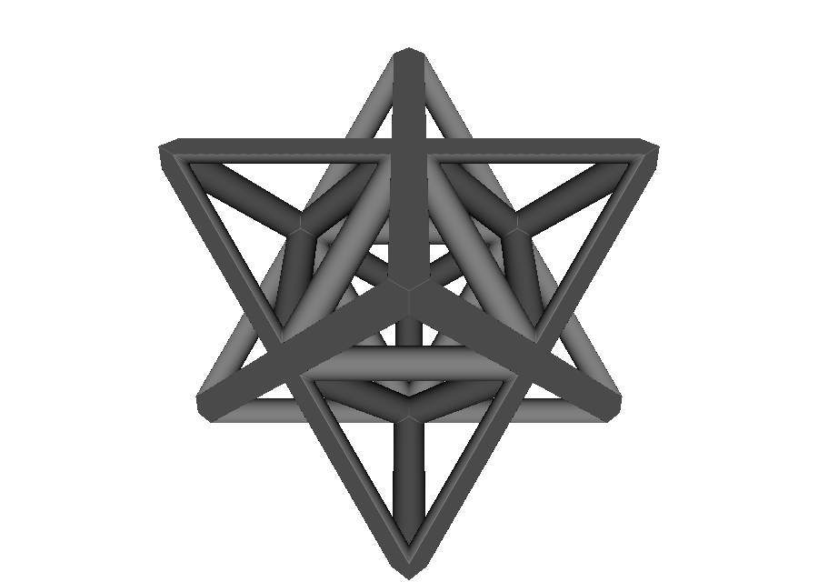

Geometric characterization#
pyvcad_metamaterials.properties turns an architected material into a consistent set of geometric measurements. Use the report to compare material usage, surface exposure, channel scale, cross-section uniformity, connectivity, topology, and graph-cell geometry across design candidates.
One characterization call collects:
solid and void fractions within a chosen envelope;
total surface area and material–void interface area;
characteristic channel size;
directional solid-area profiles;
connected-component and surface-topology measurements; and
exact coordination, length, and slenderness measurements for graph unit cells.
Characterize any OpenVCAD design#
Build the design normally, define its analysis envelope, and choose a sampling size:
import pyvcad as pv
import pyvcad_metamaterials as mm
bounds = (
pv.Vec3(-10.0, -10.0, -10.0),
pv.Vec3(10.0, 10.0, 10.0),
)
cell_map = mm.rectangular_cell_map(bounds, cells=(2, 2, 2))
root = mm.gyroid(cell_map, wall_thickness=1.2)
report = mm.properties.characterize(
root,
voxel_size=0.4,
bounds=bounds,
periodic_axes="xyz",
)
print(report)
bounds is the rectangular envelope against which relative density and porosity are measured. It defaults to the node’s bounding box, but passing the unit-cell or part envelope explicitly makes comparisons reproducible. All OpenVCAD distances are millimetres.
The analysis bounds may equal the node’s bounding box or select a smaller region within it. A smaller region clips the surface mesh before area measurement. To measure a closed mesh relative to a larger envelope, pass that mesh and envelope to characterize_mesh(...).
periodic_axes="xyz" tells the connectivity analysis to join solid voxels across opposite envelope faces. Use it only when those faces are genuinely periodic. Omit it for an ordinary finite part.
{kind=link}

{kind=link}

The complete example is 01_characterize_tpms.py.
What the report contains#
Result |
Definition |
Unit |
|---|---|---|
|
Volume of the supplied rectangular bounds, |
mm³ |
|
Fraction of inside samples multiplied by the exact envelope volume, |
mm³ |
|
|
mm³ |
|
Geometric solid fraction, |
dimensionless |
|
|
dimensionless |
|
Area of every triangle in the extracted surface mesh |
mm² |
|
Mesh area excluding triangles that lie on an envelope face |
mm² |
|
|
mm⁻¹ |
|
|
mm⁻¹ |
|
|
mm⁻¹ |
|
|
dimensionless |
|
|
mm |
|
Centroid of the occupied samples |
mm |
|
26-connected solid components, with optional periodic wrapping |
count |
|
Surface-mesh topology, |
count |
|
|
count or |
Here, “relative density” means geometric solid fraction. For a uniform material, multiply this value by the bulk material density to obtain an effective mass density. surface_area includes every extracted triangle, while interface_area removes triangles on the analysis envelope so periodic cells can be compared by their exposed material–void boundary.
hydraulic_diameter combines void volume and wetted material–void area into one characteristic channel size. It is useful for comparing how open or finely divided the passages are across cells with the same exterior dimensions.
Read directional cross-sections#
Each axis has a CrossSectionProfile:
x_profile = report.cross_sections["x"]
print(x_profile.positions)
print(x_profile.solid_areas)
print(x_profile.area_fractions)
print(x_profile.coefficient_of_variation)
At every sampled position, solid_areas estimates the load-bearing solid area normal to that axis. area_fractions divides it by the envelope’s full orthogonal area. The coefficient of variation is the population standard deviation divided by the mean.
A low coefficient of variation means the amount of solid changes little from section to section. Comparing the three axes highlights directional differences, while the individual samples identify positions where the solid section becomes locally narrow or wide. Read these profiles alongside topology and orientation when comparing cells.
Characterize a graph unit cell exactly#
Strut graphs can be measured directly from their unit-cell definitions:
report = mm.properties.characterize_graph_cell(
"octet",
cell_size=16.0,
beam_radius=0.8,
)
print(report.node_count)
print(report.strut_count)
print(report.degree_histogram)
print(report.mean_aspect_ratio)
print(report.mean_slenderness_ratio)
{kind=link}

The graph report includes node and strut counts, connected components, cycle rank E - V + C, degree/coordination statistics, total and per-strut length, and two common slenderness conventions:
aspect_ratio = L / (2r), or strut length divided by diameter.slenderness_ratio = L / r_g = 2L/rfor a solid circular section because its radius of gyration isr_g = r/2.
These centerline metrics describe the ideal unit cell at the requested physical size and radius. For a clipped, graded, repeated, or conformally mapped lattice, use characterize(...) on the final node to measure the resulting geometry.
The complete example is 02_characterize_graph_cell.py.
Control accuracy with voxel_size#
voxel_size controls both the signed-distance samples and surface mesh. A smaller value resolves thin walls and narrow connections more finely and improves volume, area, and connectivity estimates.
For a result you intend to report:
start near one quarter of the smallest wall thickness or strut diameter;
repeat at half that voxel size;
compare relative density, interface area, and the cross-section statistics; and
refine again if the change is larger than your acceptable error.
The report records voxel_size so every result retains its sampling context. For connectivity studies, choose a value comfortably smaller than the narrowest wall or strut you want to preserve.